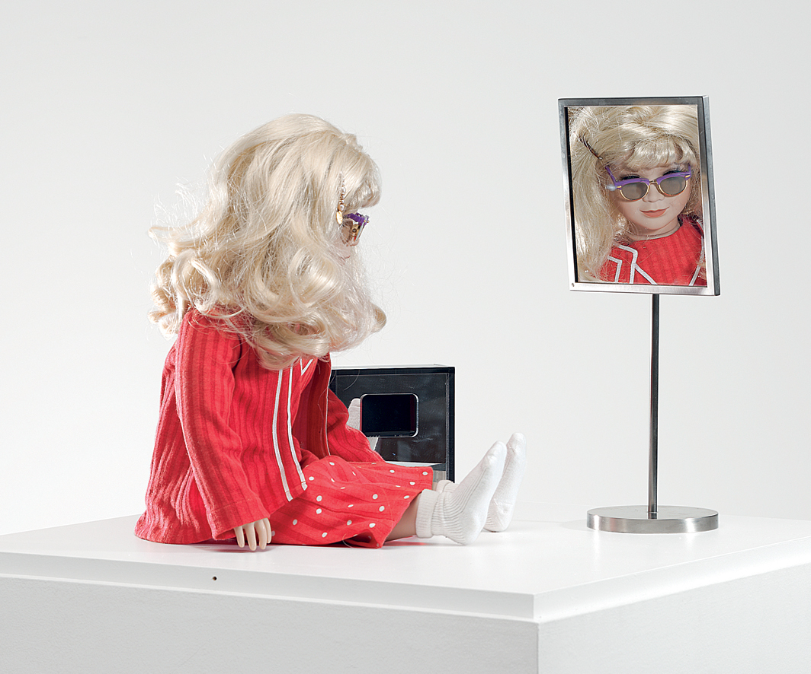
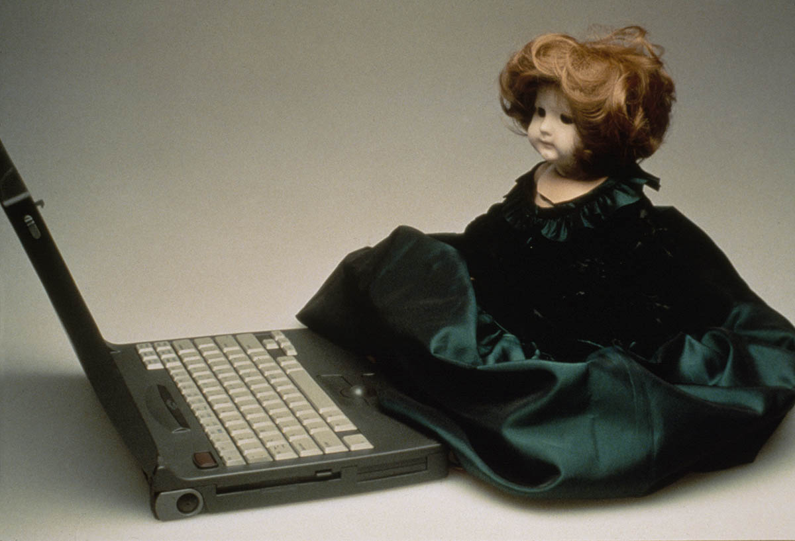
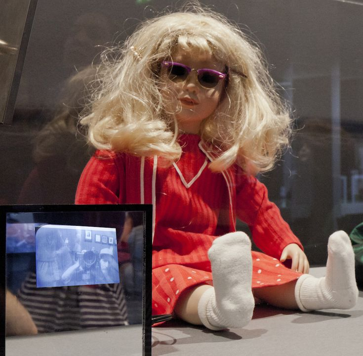
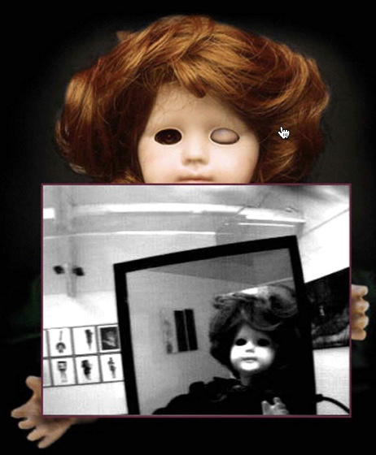
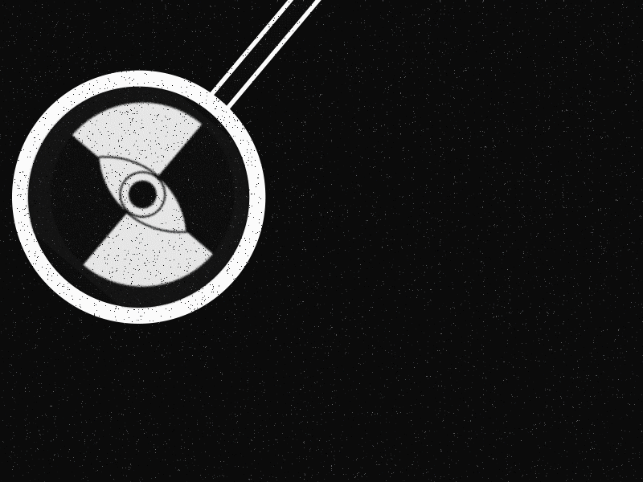
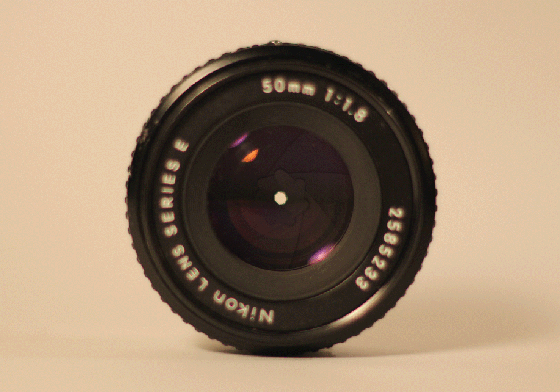

Tillie Telebotic VS CyberRoberta
The first invention of the virtual experience dolls was created and named Dollie. To add to the realism of the doll, another doll named, Tillie was made. Together they became known as the Dollie Clones.  
Tillies are given the title of an older sister, to add to her backstory, Hershman describes the doll's birth as painful and slow.
Both the doll's eyes are replaced with cameras. Tillie can conduct a 180-head turn, easily showcasing the room she's to her users. The eyes are a source of virtual reality, creating a sense of experiencing the world through a robot or doll. 